Services
Preventive Oral Care
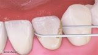 FlossingThe best method for you to keep your teeth and gums healthy is to brush your teeth at least twice every day and floss once. This prevents the buildup of bacteria around, between and on all the surfaces of your teeth that can cause gum disease and decay.
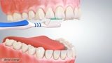
Proper Brushing
The best method for you to keep your teeth and gums healthy is to brush your teeth at least twice every day.
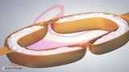
Topical Fluoride Treatment
Fluoride is a safe and effective means of fighting and preventing tooth decay. It can help re-mineralize small imperfections in the tooth enamel by attracting calcium to the teeth.
Pediatric Dentistry
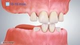Arrival of Baby Teeth
The arrival of baby between the ages of 6 and 33 months.
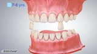
Loss of Baby Teeth
The loss of baby teeth from the ages of 6 to 12 years.
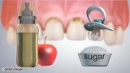
Early Infant Tooth Decay
Early childhood tooth decay, also known as baby bottle tooth decay, is a disease characterized by severe decay in the teeth of infants or young children.
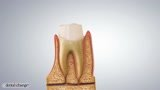
Pulpotomy with Stainless Steel Crown
A pulpotomy is typically the treatment performed to save a baby tooth when decay or breakdown reaches the nerve of the tooth. The usual restoration after a pulpotomy has been performed is a stainless steel crown.
Restorive Procedures
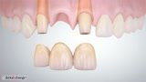Dental Bridge
A bridge is made up of two or more crowns for the teeth on either side of the gap and a false tooth or teeth in between.
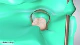
Rubber Dam
A rubber dam is a rectangular piece of rubber that is placed over a tooth or teeth to isolate the area from the rest of the mouth.
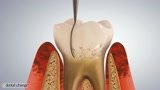
Scaling and Root Planning
Scaling and root planing is the treatment that is necessary when the progress of periodontal disease has created pockets that are too deep for a simple dental prophylaxis to remove all the plaque and calculus (tartar).
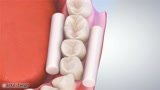
Seaplants
Dental sealants are used to prevent decay. Back teeth have pits and fissures that are vulnerable to decay and that is often where decay begins. Dental sealants are materials placed in these pits and fissures to fill them in, creating a smooth surface that is easy to clean.
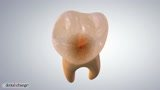
Cavaties
Cavities usually begin in the pits and fissures of back teeth or between teeth. If left untreated, the decay will continue to grow and eventually reach the nerve chamber.
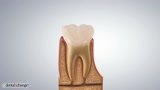
Root Treatment
Once the nerve is infected, all of the pulp tissue must be removed. The dentist will clean out all the decay and remove all the nerve tissue out of the roots. A rubbery material is used to fill and seal the pulp chamber.
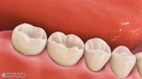
Porcelain Inlays
Porcelain is an excellent material for restoring teeth with large cavities because it looks and feels like real enamel. If the restoration does not cover the cusps of the tooth, the porcelain restoration is called an inlay.
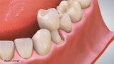
Porcelain Dental Crown
Crowns are needed when the tooth is too broken down to be restored by fillings. Crowns are typically made of metals – like gold, plastics, or porcelain. Porcelain crowns are used when a natural, tooth-like appearance is desired.
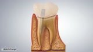
Post and Core
Most teeth that have had root canals require a crown to restore the tooth. Many times, however, there isn’t enough of the tooth remaining to hold a crown. To help rebuild the tooth, a metal post is screwed into the rubbery material and anchored into a canal.
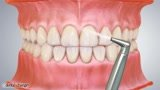
Air Abrasion
Air abrasion is a technique that allows dentists to remove decay without drilling or the need for an anesthetic.
Orthodontic Procedures
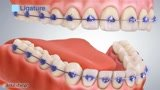Braces Overflow
Braces are used to move teeth by putting the right amount of force on the teeth over the right amount of time.
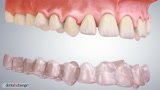
Invisalign
Invisalign is an orthodontic treatment that moves teeth through the use of a series of clear plastic trays called aligners.

How Do Braces Move Teeth
Braces are used to move teeth by putting the right amount of force on the teeth over the right amount of time.
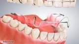
Retainers
Retainers are used after orthodontic treatment to stabilize the teeth in their new locations.
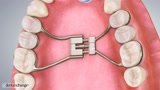
Palatal Expander
A palatal expander is an orthodontic device used to widen the upper jaw. It is usually used to help put the upper teeth in a better biting alignment with the lower teeth.
Periodontal Diseases
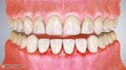Gingivitis is the earliest stage of gum disease. It is an inflammation of the gums caused by plaque buildup at and below the gum line.
Gingivitis
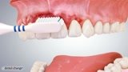
Gum Disease Symptoms
Two diseases, gingivitis and periodontitis, are commonly called gum diseases.
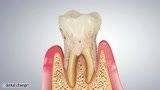
Periodontitis
Periodontitis is a more advanced form of gum disease.
Oral Surgery Procedures
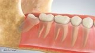Impacted Third Molars
Third molars (or wisdom teeth) become impacted when there is a mismatch between the size of the tooth and the size of the jaw.
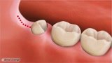
Surgical Extraction of Wisdom Teeth
Frequently, there is not enough room in the jaw for the complete eruption of some or all 3rd molars, also called wisdom teeth.
TMJ & Sleep Apnea
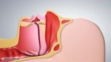Obstructive Sleep Apnea
At times, the airway may become completely blocked, which stops the passage of any air into your lungs. This is called apnea.
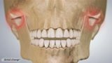
Bruxism
One of the most frequent problems related to your bite is the involuntary side-to-side grinding of your teeth, called bruxism.
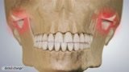
Treatments for Bruxism
Bruxism is the involuntary side-to-side grinding of your teeth. It is typically done during sleep and is often associated with temporomandibular joint dysfunction
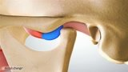
Temporomandibular Joint
The temporomandibular joint (TMJ) is the most complicated joint in the body.
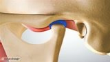
TMJ Normal
In a healthy joint, the head of the lower jaw bone moves smoothly up and down the joint, and the disc comfortably cushions the movement.
TMJ Clicking
Clicking is caused when pressure from the lower jaw bone squeezes the disc and causes it to bulge.
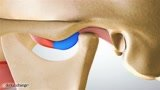
TMJ Locking
Locking is caused when pressure from the lower jaw bone squeezes the disc and causes it to bulge.
Cosmetic Dentistry
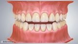In-office Tooth Whitening
A whitening gel is prepared and injected onto the front surfaces of the teeth. A high intensity light is used to accelerate the whitening process. After the gel is rinsed-off and the barrier material removed, the final result is a much whiter smile.
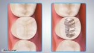
Tooth Colored Fillings
Tooth colored filling materials also have the ability to bond to tooth enamel. So, they are ideal for repairing chipped and broken front teeth.
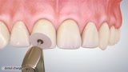
Bonding
Tooth bonding is the application of a tooth-colored resin material using adhesives and a high intensity curing light. The procedure gets its name because materials are bonded to the tooth.
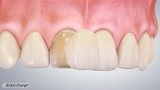
Porcelain Veneers
Porcelain veneers require the removal of a thin layer of enamel to make room for the final restoration.
Prosthodontic Procedures
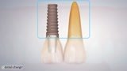Dental Implants Overview
A dental implant is an artificial tooth root that is placed into your jaw to hold a replacement tooth or bridge.

Complete Denture vs Denture Implant
Dentures are removable appliances that replace missing teeth and help restore your smile. If you’ve lost all of your natural teeth, the appliance is called a complete denture.
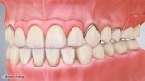
Removable Partial Dentures
A removable partial denture is a denture for a partially edentulous (lacking teeth) patient who cannot have a fixed bridge. Typically, the reason is lack of required teeth to serve as support for a bridge.
Diagnostic Procedures

Cracked-chipped Tooth Sensitivity
If the enamel becomes cracked, the insulation can break down and sensations from hot or cold can directly touch the part of the tooth below the enamel, called Dentin.
.jpg)
.jpg)